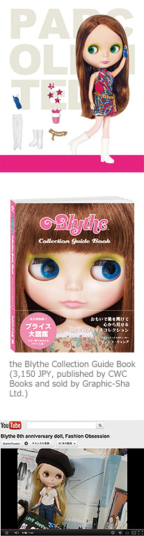

Manufactured by Kenner in 1972, the original Blythe (now known as “vintage”) was produced for only one year and then was retired because of poor sales. 30 years later, in 1999, Junko Wong, President and CEO of CWC saw Blythe snapshots at the CWC New York office opening party. She fell in love with Blythe and knew she would be an instant sensation in Japan. Then, in late 2000, she made her comeback in Japan when CWC produced a charming TV commercial for Parco department store starring Blythe. After the TV spotlight she became an overnight sensation in Japan and Asia. Neo Blythe was reborn, no longer as a child’s toy but as a fashion doll appealing to adult doll collectors. Neo Blythe ushered in the era of contemporary doll culture and collecting. In June 2001, to meet the popular demand of this new Blythe fan base, CWC produced an 11 inch neo-Blythe doll, Parco Limited Edition, with the permission of Hasbro and the manufacturing help of Takara. This was the very first Neo Blythe doll. ＊The first designs for Neo Blythe were inspired by the Kenner Vintage Blythe designs. Later on Neo Blythe was produced with original concepts and designs by the CWC design team Junie Moon. From 2001 to 2011, CWC produced and planned the Blythe Anniversary Charity Event and exhibition. This anniversary extravaganza featured one-of-a-kind Blythe dolls customized and styled by famous fashion designers, artists and musicians. The anniversary exhibitions travelled throughout Japan, Asia, and even Europe. The dolls were then auctioned off for charity with 100% of the proceeds going towards charity. Blythe supported numerous charities throughout the world. These anniversary exhibitions dolls garnered media attention and the attention of collectors and customizers creating a sensation in the doll world. In 2002, Neo Blythe’s cute little sister, Petite Blythe was produced. She measured 11 cm and was a sweet addition to the Blythe family. In 2005, Blythe figurines were produced. In 2010, a new 20 cm medium sized Blythe doll was produced. Middie Blythe is the lovely adolescent sister to Neo and Petite. Until 2011 there are 185 types of Neo Blythe, 200 styles of Petite Blythe, and 5 Middie Blythe created in Japan.
Junko Wong is the CEO and President of Cross World Connections Group and Blythe Creative Producer. She had the unique vision to bring back Blythe. She is in charge of all promotion plans, marketing, production, doll concepts and designs. She has experience in various types of projects such as freelance exhibition producer and curator. Junko established Cross World Connections co.,ltd in 1991. CWC holds contracts with world’s top illustrators such as Jeffrey Fulvimari and about 40 artists from around the world. CWC is a creative agency for illustrators, character designers, and graphic artists. From 2000, CWC was granted the Blythe license for Japan and Korea and started the total creative production for Neo Blythe. CWC created all Blythe products such as Blythe dolls, stationery, Blythe related product plans, designs and as well as animations. Mrs.Wong is the leader of the whole CWC group, CWC retail division Junie Moon co.,ltd (official shops in Daikanyama and Shinjuku Marui One Lele Junie Moon), and also CWC International a worldwide artists agent New York branch.

This website has been created as part of an assignment in an approved course of study for Curtin University and contains copyright material not created by the author. All copyright material used remains copyright of the respective owners and has been used here pursuant to Section 40 of the Copyright Act 1968 (Commonwealth of Australia). No part of this work may be reproduced without consent of the original copyright owners. See code comments for references.